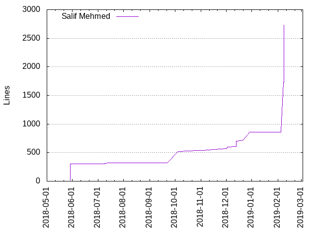

Authors
| Author | Commits (%) | + lines | - lines | First commit | Last commit | Age | Active days | # by commits |
|---|
| Salif Mehmed | 47 (100.00%) | 2729 | 1723 | 2018-05-29 | 2019-02-08 | 254 days, 19:29:08 | 18 | 1 |


| Month | Author | Commits (%) | Next top 5 | Number of authors |
|---|
| 2019-02 | Salif Mehmed | 6 (100.00% of 6) | | 1 |
| 2018-12 | Salif Mehmed | 10 (100.00% of 10) | | 1 |
| 2018-11 | Salif Mehmed | 3 (100.00% of 3) | | 1 |
| 2018-10 | Salif Mehmed | 8 (100.00% of 8) | | 1 |
| 2018-09 | Salif Mehmed | 2 (100.00% of 2) | | 1 |
| 2018-08 | Salif Mehmed | 1 (100.00% of 1) | | 1 |
| 2018-07 | Salif Mehmed | 5 (100.00% of 5) | | 1 |
| 2018-05 | Salif Mehmed | 12 (100.00% of 12) | | 1 |
| Year | Author | Commits (%) | Next top 5 | Number of authors |
|---|
| 2019 | Salif Mehmed | 6 (100.00% of 6) | | 1 |
| 2018 | Salif Mehmed | 41 (100.00% of 41) | | 1 |
| Domains | Total (%) |
|---|
| users.noreply.github.com | 28 (59.57%) |
|---|
| programmer.net | 14 (29.79%) |
|---|
| gmail.com | 5 (10.64%) |
|---|